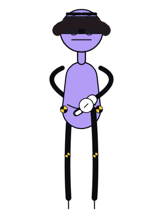
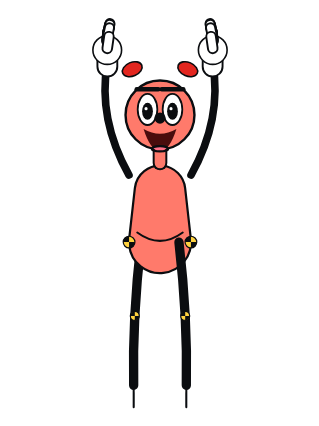
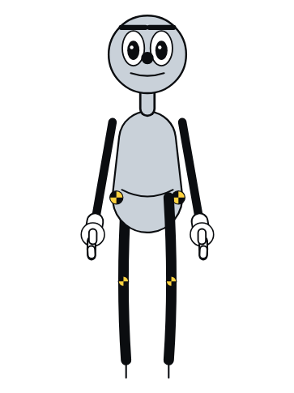

New idea · not yet made · after Cinema Paradiso (Tornatore, 1988)
Paradiso
Who decides what an eye may see, and what happens to the pieces that were cut?
In the booth of a small cinema there is a bell. It rings whenever two figures touch on screen. Each time it rings, those frames are cut out of the film. Someone keeps the pieces in a biscuit tin.
Why this, after Clockwork Pink
A Clockwork Pink and Paradiso are two halves of one question. Both are about a machine that rules over looking.
A Clockwork Pink
after the Ludovico treatment · proof 0 made
- The machine
- A lid clamp holds the eye open.
- What it does to seeing
- Forces it. The eye must look at what it is shown.
- The reply
- A hand comes to rest on the clamp and turns it away.
- In Noddings' terms
- Caring-for, which needs a face and a touch, set against a programme that treats the subject as a mechanism to fix.
Paradiso
after the censored kisses in Cinema Paradiso · proposed
- The machine
- A bell rings, and scissors cut.
- What it does to seeing
- Forbids it. The eye must not see what was there.
- The reply
- Someone keeps every cut piece and, years later, gives them all back spliced into one reel.
- In Noddings' terms
- Caring-about the town's morals by rule, set against caring-for one child by keeping what she wanted to see.
The turn that makes it a bolas film
- The bell is the lab's own instrument. CRASH LAB scores every touch, including whether a hand lands where it was sent. In Paradiso, that same contact detector is wired to the bell. The measurement becomes the censor, so the project is examining its own tools.
- The films being cut are the family's films. Bola and Shim's hugs, carries and the lifts of Dot already exist in the archive. The touches that get cut are real moments from earlier bolas films, so they are free to use.
- The blind review becomes the plot. After the fire, the projectionist cannot see, and Dot tells him what is on the screen, shot by shot. Describing first and interpreting second is how this project already reviews its work. Here it becomes an act of care.
How it differs from the source. In Tornatore's film, a priest previews each film and rings a hand bell at every kiss. Here the bell has no ringer. A mechanism decides, which is what makes it clockwork.
Casting

lilac · blindfolded after Reel 2
He runs the booth, does the cutting and later swings the picture out over the square. The fire takes his sight. This would give the Critic a history for his blindfold, which needs deciding before anything is built.

coral · seventy-two per cent of Bola's size
She catches the cut frames in the tin and learns to splice. After the fire she becomes the Critic's eyes.

archive passages from earlier family films
They are the couple in the films being cut. Every touch between them is a frame the bell finds.

grey test dummies · six sizes
They hiss at the jump cuts and fill the square when the picture goes out onto the wall.
Three reels
The first two reels follow from the seed. The third is a seed only, because its ending should be found in the making, not decided in advance.
Reel 1 · The bell
staccato: projector clatter, the bell, scissors, dry tape
A private screening in the empty house. On screen, Bola reaches for Shim. The bell rings. The Critic stops the projector, opens the gate and cuts out two frames, and Dot catches them in the tin.
Therefore that night the extras watch hugs that jump. Every embrace lands one frame early, as if the bodies flinched. The hall hisses.
Reel 2 · The square
sustained: one long beam, a crowd breathing, the hum running hot
The house is full and the town is locked out. The Critic swivels the projector mirror and throws the picture out of the booth window, across the square, onto the wall of a house. The extras outside see the film. In this cut, nothing was taken out.
Therefore the lamp runs too long and the film catches fire. Dot drags him out. He can no longer see, so she describes the screen to him: who stands where, which hand moves, what lands.
Reel 3 · The tin
seed only
Years on, Dot opens the biscuit tin. Every cut touch is there, spliced into one reel. She threads it. Where it plays, and who is in the room, is left for the making to find.
First proof: the splice
One gesture, made before anything else and judged the same way as Clockwork Pink. Rigid paper pieces, motion on twos and synthesized sound.
The passage, about 8 s
- A paper film strip of eight frames runs through the gate. In frames 4 and 5, Bola's hand lands on Shim's shoulder.
- Frame 4 reaches the gate and the bell rings.
- The scissors cut out frames 4 and 5, and the two frames fall into the tin.
- Tape joins frame 3 to frame 6.
- The strip plays again. The hand is suddenly on the shoulder, with no moment of landing.
How it will be judged
- Measured: no frame is ever destroyed. On every drawing, the frames on the strip plus the frames in the tin add up to eight.
- Measured: the bell rings within two frames of the touch frame entering the gate.
- Viewing only: on the second pass, a viewer feels the missing touch as a loss rather than a glitch. A fresh critic describes the passage before reading this page.
Sources and rights
- Cinema Paradiso (1988) is under copyright.Reference only. No frames, music or tracing from it.
- The films being cut need real touches.Taken from the family's own films in this archive, which the project owns.
- The music.Synthesized from scratch. Nothing from Ennio Morricone's score.
Decide before building
Should the fire be what gave the Critic his blindfold? If yes, every earlier film he reviewed gains a backstory. If no, the projectionist is a new figure, and the Critic stays outside the story as its reviewer.